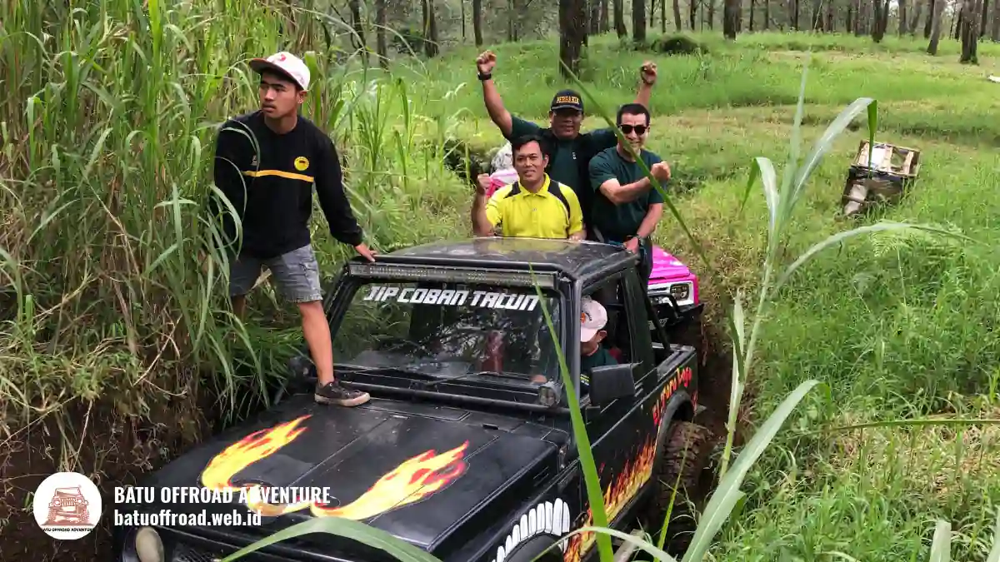

Offroad Coban Rais Tanpa Ribet, Shuttle Bus Langsung Masuk
Offroad Coban Rais adalah petualangan jeep di kawasan lereng Gunung Panderman, Kota Batu, yang bisa dipesan rombongan lewat Batu Offroad dengan pendampingan driver dan guide profesional. Cek alur, akses bus, dan keamanannya sekarang.
Ringkasan Inti
- Coban Rais berada di Dusun Dresel, Desa Oro-oro Ombo, Kecamatan Batu, pada ketinggian sekitar 1.025 meter di atas permukaan laut (Orami, 23 Juli 2024).
- Lokasinya sekitar 15-20 menit dari pusat Kota Batu dengan kendaraan pribadi (Indonesia Travel).
- Paket Batu Offroad disusun untuk rombongan dan sudah mencakup armada jeep 4x4, driver, serta guide.
- Rombongan yang datang dengan bus bisa berkoordinasi lebih dulu dengan tim agar titik kumpul dan perpindahan peserta berjalan rapi.
- Kirim tanggal dan jumlah orang ke WhatsApp +62 812-3398-9707 untuk cek jadwal dan ketersediaan armada.
Sedang menyusun acara untuk keluarga, kantor, sekolah, atau komunitas? Hubungi Batu Offroad di WhatsApp +62 812-3398-9707 untuk cek jadwal dan ketersediaan sebelum tanggal yang Anda inginkan terisi.
Apa itu offroad Coban Rais?
Offroad Coban Rais adalah kegiatan wisata berkendara jeep 4x4 di sekitar kawasan Coban Rais, Kota Batu, dengan jalur alam yang dipandu driver dan guide berpengalaman.
Kegiatan ini bukan balapan dan bukan offroad ekstrem. Fokusnya adalah pengalaman bersama di alam terbuka: melewati jalur tanah, suasana pegunungan, dan udara sejuk khas lereng Gunung Panderman. Peserta duduk sebagai penumpang, sementara pengemudi jeep mengendalikan kendaraan.
Coban Rais sendiri dikenal sebagai destinasi air terjun di Batu dengan hutan pinus di sekitarnya. Kawasan ini juga berdekatan dengan Batu Flower Garden yang populer untuk berfoto. Karena itu, offroad di area ini cocok dipadukan dengan kunjungan wisata lain dalam satu hari.
Siapa yang cocok ikut offroad Coban Rais?
Offroad Coban Rais cocok untuk rombongan keluarga, karyawan kantor, rombongan sekolah, dan komunitas yang ingin kegiatan seru, aman, dan mudah diatur bersama pemandu.
Setiap jenis rombongan punya kebutuhan berbeda. Keluarga biasanya mencari suasana santai dan foto bersama. Kantor mencari kegiatan gathering yang membangun kekompakan. Sekolah mencari kegiatan luar ruang yang tertib dan terpantau. Komunitas mencari pengalaman seru yang bisa dinikmati beramai-ramai.
Menurut informasi di situs Batu Offroad, paket disusun untuk rombongan dengan minimal 10 orang. Untuk peserta anak atau lansia, kondisi kesehatan dan batas usia perlu dikonfirmasi lebih dulu ke tim agar kegiatan tetap nyaman bagi semua peserta.
Panduan tambahan tersedia di artikel offroad Batu untuk keluarga dan offroad Batu untuk gathering kantor.
Bagaimana alur offroad Coban Rais dari datang sampai pulang?
Alur umumnya dimulai dari konfirmasi jadwal, kumpul di titik pertemuan, briefing keselamatan, perjalanan jeep bersama guide, lalu kembali ke titik awal. Berikut gambaran urutan yang lazim pada kegiatan offroad rombongan:
- Rombongan mengirim tanggal dan jumlah peserta ke tim Batu Offroad.
- Tim mengecek ketersediaan armada dan menyusun rencana kegiatan.
- Peserta datang ke titik kumpul sesuai jadwal yang sudah disepakati.
- Guide memberikan briefing keselamatan sebelum jeep berangkat.
- Peserta menikmati perjalanan jeep dengan pendampingan driver dan guide.
- Rombongan kembali, beristirahat, lalu melanjutkan agenda lain.
Urutan dapat berubah tergantung paket, cuaca, dan kondisi jalur pada hari kegiatan. Detail akhir selalu dikonfirmasi tim sebelum hari H.
Apakah shuttle bus bisa langsung masuk ke area offroad?
Rombongan yang datang dengan bus sebaiknya mengonfirmasi akses sebelum berangkat, karena kemampuan bus besar melewati jalan menuju area wisata Coban Rais bergantung pada ukuran kendaraan dan kondisi jalan.
Pertanyaan ini penting bagi panitia yang membawa 30 sampai 50 orang. Jalan menuju kawasan pegunungan umumnya menyempit dan berkelok. Karena itu, bus besar tidak selalu bisa mencapai titik terdalam.
Solusi yang lazim adalah menurunkan peserta di titik yang aman dan memindahkan mereka dengan kendaraan yang lebih kecil (shuttle jeep). Batu Offroad membantu rombongan mengatur koordinasi ini. Kirimkan jenis kendaraan, jumlah peserta, dan jam kedatangan ke WhatsApp +62 812-3398-9707 supaya tim dapat menyarankan titik kumpul dan alur perpindahan yang paling tepat.
Seperti apa kondisi kawasan Coban Rais?
Coban Rais berada di lereng Gunung Panderman pada ketinggian sekitar 1.025 mdpl, dengan udara sejuk, hutan pinus, dan jalur trekking menuju air terjun.
Data lapangan yang perlu diketahui rombongan:
- Lokasi: Dusun Dresel, Desa Oro-oro Ombo, Kecamatan Batu, Kota Batu (Orami, 23 Juli 2024).
- Waktu tempuh dari pusat Kota Batu: sekitar 15-20 menit dengan kendaraan pribadi (Indonesia Travel).
- Trekking dari area parkir menuju air terjun: sekitar 20-30 menit (Indonesia Travel).
- Tiket masuk Coban Rais: Rp10.000 per orang, parkir motor Rp5.000, parkir mobil Rp10.000 (Orami, 23 Juli 2024).
Tarif tiket dan jam operasional dapat berubah sewaktu-waktu sesuai kebijakan pengelola kawasan. Sumber yang berbeda juga mencatat jam buka yang berbeda, sehingga pengecekan ulang sebelum berangkat adalah langkah yang aman.

Jeep 4x4 melintasi jalur hutan pinus yang asri dekat Coban Rais
Apa yang perlu disiapkan peserta offroad?
Peserta sebaiknya memakai pakaian nyaman, alas kaki tertutup yang tidak licin, dan membawa jaket tipis, air minum, serta perlengkapan pribadi yang aman dari percikan air dan lumpur.
Udara di Batu cenderung sejuk, terutama pagi dan sore. Jalur tanah bisa berdebu saat kering dan licin saat basah. Beberapa persiapan yang membantu:
- Pakaian berlapis yang mudah dikeringkan.
- Sepatu atau sandal gunung dengan cengkeraman baik.
- Pelindung hujan ringan.
- Pakaian ganti untuk setelah kegiatan.
- Obat pribadi bagi peserta yang memerlukan.
Batu Offroad menyediakan armada jeep, driver, dan perlengkapan keamanan sesuai paket, sehingga peserta tidak perlu membawa peralatan khusus. Daftar lengkap dapat dibaca di daftar persiapan offroad Batu Malang.
Kapan waktu terbaik offroad di Coban Rais?
Secara umum, bulan April sampai Oktober dinilai paling nyaman untuk wisata luar ruang di Batu karena cuaca cenderung cerah dan tidak terlalu basah (Trip.com Batu Travel Guide).
Pagi hari biasanya lebih sejuk dan jalur lebih nyaman. Musim hujan tetap bisa dijalani, tetapi jalur menjadi lebih licin dan jadwal mungkin perlu disesuaikan. Armada Batu Offroad dilengkapi atap dan perlindungan, serta tersedia area pendopo permanen untuk berteduh saat hujan di basecamp.
Untuk akhir pekan dan hari libur nasional, tim menyarankan pemesanan minimal 1-2 minggu sebelumnya agar jadwal dan armada tersedia.
Mengapa memilih offroad dibanding wisata mandiri biasa?
Offroad bersama operator memberi pendampingan, armada siap pakai, dan jadwal terstruktur, sedangkan wisata mandiri memberi kebebasan penuh tetapi menuntut rombongan mengatur sendiri semua kebutuhan.
| Aspek | Offroad bersama operator | Wisata mandiri |
|---|---|---|
| Pendampingan | Driver dan guide | Tidak ada |
| Armada | Jeep 4x4 disediakan | Kendaraan sendiri |
| Pengaturan jadwal | Disusun tim | Diatur panitia |
| Cocok untuk | Rombongan terorganisir | Wisatawan fleksibel |
| Keterbatasan | Perlu booking | Tanpa pemandu jalur |
Pilihan terbaik bergantung pada ukuran rombongan, tujuan kegiatan, dan pengalaman panitia. Rombongan besar umumnya terbantu oleh pengaturan terpusat.
Apa kesalahan umum saat merencanakan offroad rombongan?
Kesalahan paling umum adalah memesan terlalu mepet, tidak mengonfirmasi akses bus, dan tidak menyampaikan kondisi peserta seperti anak, lansia, atau kebutuhan kesehatan khusus.
Kesalahan lain yang sering terjadi:
- Tidak menanyakan isi paket secara rinci sebelum membayar.
- Mengabaikan prakiraan cuaca pada hari kegiatan.
- Menyusun jadwal terlalu padat sehingga peserta kelelahan.
- Tidak menunjuk satu koordinator rombongan sebagai penghubung dengan tim.
Paket apa yang bisa dipadukan dengan offroad?
Offroad dapat dipadukan dengan fun games, team building, rafting, paintball, atau outbound sesuai tujuan acara dan jumlah peserta.
Batu Offroad menyediakan beberapa pilihan, antara lain paket offroad dan fun games untuk suasana santai, serta paket offroad dan team building untuk acara kantor dan komunitas. Seluruh pilihan dapat dilihat di halaman daftar paket Batu Offroad.
Bagaimana cara booking offroad Coban Rais?
Booking dilakukan lewat WhatsApp +62 812-3398-9707 dengan mengirim tanggal, jumlah peserta, jenis rombongan, dan kebutuhan khusus, lalu tim mengecek jadwal dan ketersediaan armada.
Langkah praktisnya:
- Tentukan tanggal utama dan satu tanggal cadangan.
- Hitung jumlah peserta, termasuk anak dan lansia.
- Kirim informasi tersebut ke WhatsApp Batu Offroad.
- Konfirmasi paket, titik kumpul, dan akses kendaraan.
- Bagikan jadwal final kepada seluruh peserta.
Tim Batu Offroad yang menyusun kegiatannya, sehingga panitia cukup fokus pada kebutuhan rombongan.
Kesimpulan
- Offroad Coban Rais cocok untuk keluarga, kantor, sekolah, dan komunitas yang ingin kegiatan seru dengan pendampingan.
- Konfirmasi akses bus dan titik kumpul sebelum hari kegiatan.
- Siapkan pakaian nyaman, alas kaki tertutup, dan cek cuaca.
- Kirim tanggal dan jumlah orang ke WhatsApp +62 812-3398-9707.
Siap mengajak rombongan Anda? Booking offroad Coban Rais bersama Batu Offroad lewat WhatsApp +62 812-3398-9707, lalu biarkan tim menyusun kegiatannya untuk keluarga, kantor, sekolah, atau komunitas Anda.
FAQ
-
Apakah offroad Coban Rais aman untuk keluarga?
Offroad Coban Rais umumnya aman untuk keluarga bila dipandu driver dan guide, mengikuti briefing keselamatan, dan peserta sesuai kondisi kesehatan. Konfirmasi usia anak ke tim sebelum booking. -
Apakah harus membawa perlengkapan sendiri?
Tidak harus. Batu Offroad menyediakan armada jeep, driver, dan perlengkapan keamanan sesuai paket. Peserta cukup membawa kebutuhan pribadi seperti pakaian ganti dan air minum. -
Berapa minimal peserta offroad Coban Rais?
Menurut informasi di situs Batu Offroad, paket disusun untuk rombongan minimal 10 orang. Hubungi WhatsApp +62 812-3398-9707 untuk memastikan ketentuan terbaru. -
Apakah bus pariwisata bisa ikut ke lokasi?
Bus pariwisata bisa dikoordinasikan, tetapi akses bus besar ke area terdalam bergantung kondisi jalan. Konfirmasi jenis kendaraan ke tim agar titik kumpul dan perpindahan peserta bisa diatur. -
Bagaimana jika turun hujan saat jadwal offroad?
Armada Batu Offroad dilengkapi atap dan perlindungan, dan basecamp memiliki pendopo permanen untuk berteduh. Keputusan melanjutkan kegiatan mengikuti kondisi cuaca dan arahan tim. -
Berapa lama sebaiknya memesan sebelum hari kegiatan?
Pemesanan minimal 1-2 minggu sebelum tanggal kedatangan disarankan, terutama untuk akhir pekan dan hari libur nasional, agar jadwal dan armada masih tersedia.
Artikel Terkait